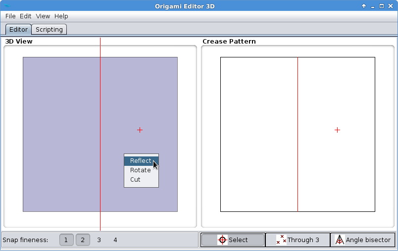
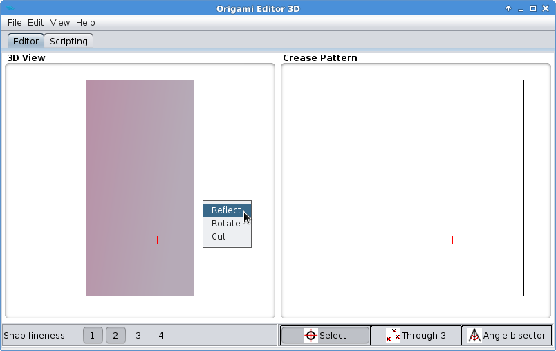
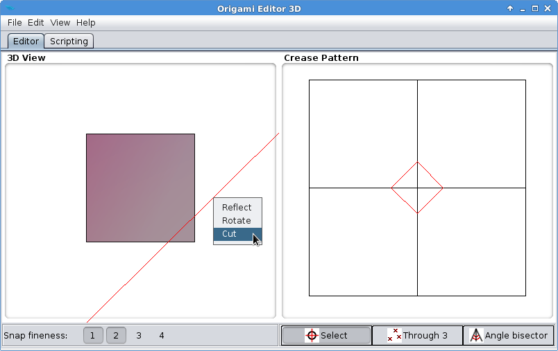
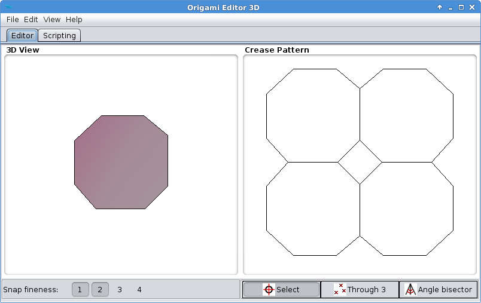
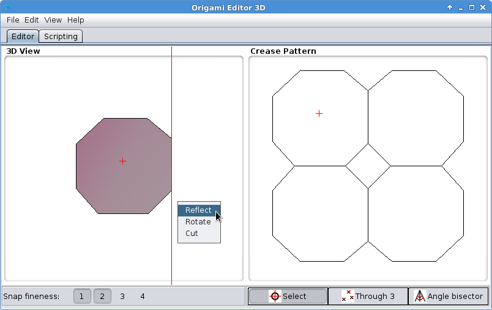
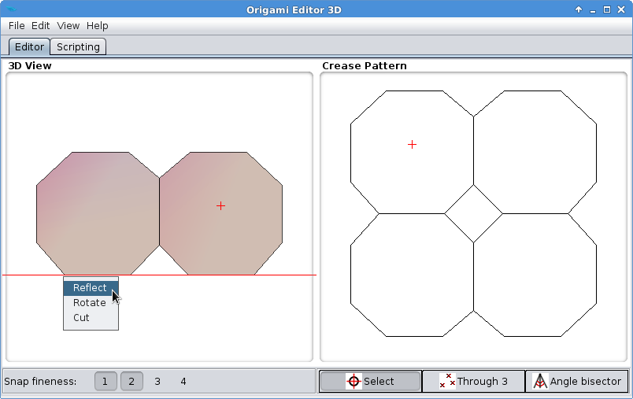

Cutting Tool
As its name suggests, Cutting Tool cuts the origami along the Ruler.
If Selection Mode is active, the area containing the red cross will be removed. Otherwise, all the external parts relative to the Ruler will be removed.
Exercise
- Start with a new piece of paper by selecting File > New > Square origami.
- Enter Selection Mode by left clicking the right side of the paper in the Crease Pattern view. Then fold the paper in half vertically using the Reflection Tool:

- In the Crease Pattern, left click on the bottom side of the paper. Fold the paper in half horizontally using Reflection Tool again:

- Cut down the bottom right corner by positioning the Ruler as seen on the next image, and selecting Cut:

- Cut down the other three corners in the same manner:

- It's time to unfold the paper. Go to the Crease Pattern, then left click on the top left quarter of the paper. Align the Ruler to the right edge and select Reflect:

- Go to the Crease Pattern again and left click on the top left quarter. Align the Ruler to the bottom edge and select Reflect:

- You have made a simple paper flower.